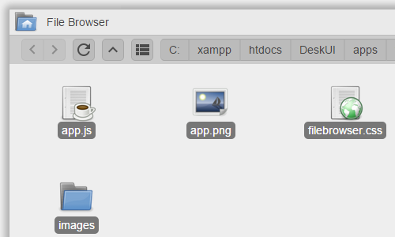
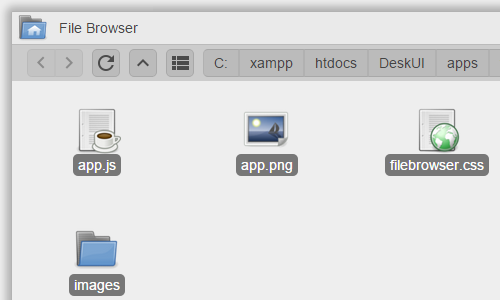
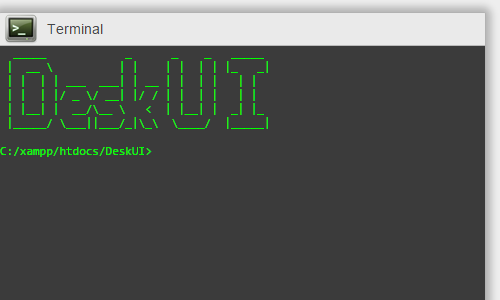
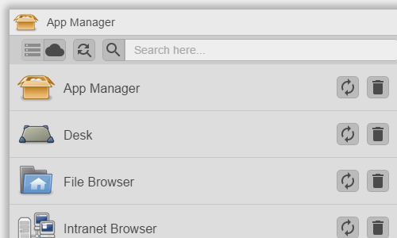
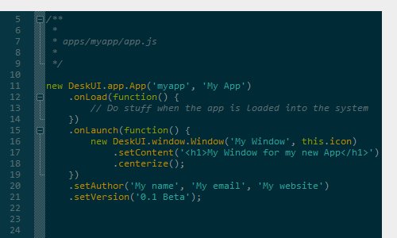

File Browser
DeskUI provides you with a simple and intuitive file browser. You can drag-and-drop files in-between file browsers, download, delete, cut, copy, paste and move files around with less than 3 clicks.
DeskUI is a simple application that allows you to manage your server via a fully functional HTML5 desktop.
DeskUI provides you with a simple and intuitive file browser. You can drag-and-drop files in-between file browsers, download, delete, cut, copy, paste and move files around with less than 3 clicks.
DeskUI's build-in terminal works just like your OS's ones. On top of that it also renders third-party applications (e.g. SSH clients) unnecessary.
DeskUI comes with a set of pre-installed apps which are essential for it's complete functionality. Additionally it provides you with an app manager, thus allowing you to download more apps from DeskUI's app repository at will, all free and open source!
DeskUI's JavaScript framework is simple and understandable with commented code and easy-to-use APIs. You only need one line of code to place your own app on the desktop! For more information check out the documentation.
DeskUI is open source and licensed under the MIT license – furthermore all of the official apps and the ones included in DeskUI's repository are open source too!On GitHub